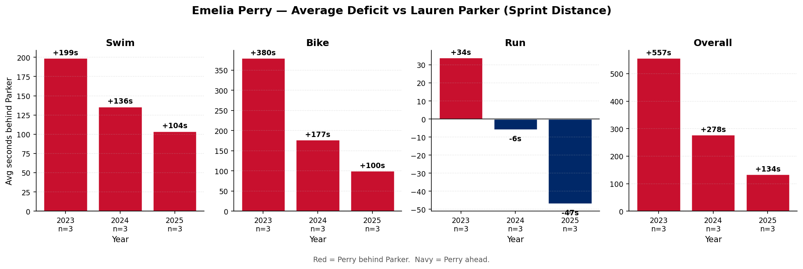
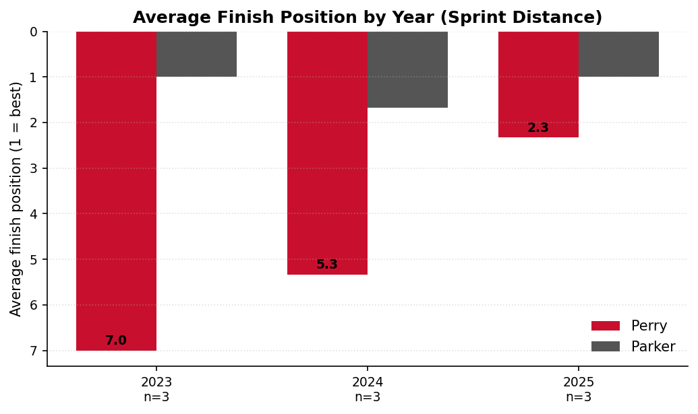
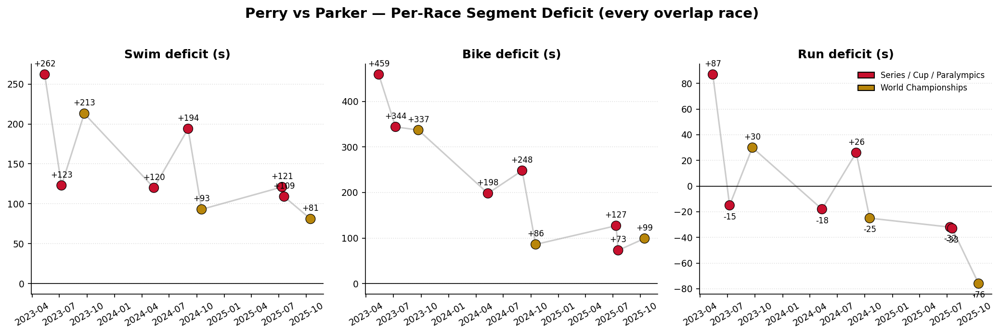

Emelia Perry — PTWC Progression vs Lauren Parker
Story
Emelia Perry has closed the gap on Paralympic gold medalist Lauren Parker across every discipline from 2023 to 2025.
The total time deficit shrank by 76%, average finish position improved from
7th to 2.3, and Perry has flipped from trailing Parker
on the run to running faster than her in 2025.
76%
Total deficit reduction
74%
Bike deficit reduction
-47s
2025 run advantage (Perry ahead)
7 → 2.3
Avg finish position
Yearly Deficit Trend — Sprint Distance (9 overlap races)

Finish Position Trend

Every Overlap Race

2025 World Championships, Wollongong — Worlds Silver
Perry finished 2nd at PTWC Worlds, only
70s behind Parker on total time, and was
76s faster than Parker on the run.
Best individual head-to-head result of her career.
Yearly Detail (sprint races)
|
n races |
Swim Δ (s) |
Bike Δ (s) |
Run Δ (s) |
Total Δ (s) |
Perry avg pos |
| year |
|
|
|
|
|
|
| 2023 |
3 |
199.3 |
380.0 |
34.0 |
557.0 |
7.0 |
| 2024 |
3 |
135.7 |
177.3 |
-5.7 |
278.3 |
5.3 |
| 2025 |
3 |
103.7 |
99.7 |
-47.0 |
133.7 |
2.3 |
Caveats:
2025 sample is 3 sprint races (Magog, Montreal, Wollongong Worlds). Sample is small — every additional race could move the yearly average meaningfully. Both athletes are in the H1 wheelchair sub-class, so within-class time factors cancel out and raw split differences are valid.
Generated 2026-05-16 19:08 — Source: World Triathlon API (race_results, events tables).